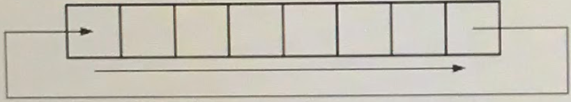

Viết chương trình dịch chuyển bit sang bên phải của một số nguyên dương nhập từ bàn phím.
Ví dụ về sự dịch chuyển bit theo chu kì sang phải:
Định dạng đầu vào:số nguyên dương 2 byte (thập lục phân) và số bit dịch chuyển (thập phân).
Định dạng đầu ra:số nhận được ở dạng thập lục phân.
Ví dụ (dòng đầu tiên là đầu vào của chuỗi nguồn, dòng thứ hai là đầu ra của kết quả).